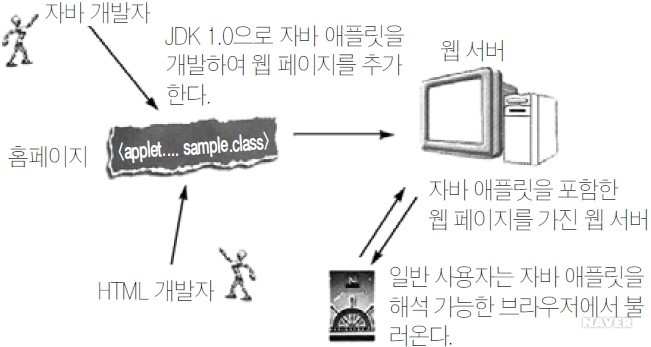

웹 서비스에 이용되는 스크립트에는 자바 스크립트(JavaScript)나 비주얼 베이직 스크립트(Visual Basic Script) 등이 있다. 이들은 서버가 아닌 클라이언트 측의 웹 브라우저에 의해 해석되고 적용되는데, 이를 CSS(Client Side Script)라 한다. [네이버 지식백과] CSS (정보 보안 개론, 2013. 6. 28., 양대일)
인터넷 서비스의 하나인 월드 와이드 웹을 통해 볼 수 있는 문서를 만들 때 사용하는 웹 언어의 한 종류이다. 특히 하이퍼텍스트를 작성하기 위해 개발되었으며, 인터넷에서 웹을 통해 접근되는 대부분의 웹 페이지들은 HTML로 작성된다.